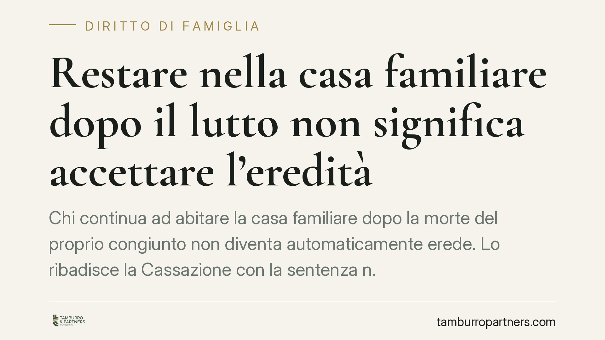

Restare nella casa familiare dopo il lutto non significa accettare l'eredità
Chi continua ad abitare la casa familiare dopo la morte del proprio congiunto non diventa automaticamente erede. Lo ribadisce la Cassazione con la sentenza n. 1551/2026: la semplice permanenza del coniuge superstite e dei figli conviventi non vale come accettazione tacita dell'eredità, né fa scattare l'obbligo di inventario in tre mesi. Un chiarimento che protegge i familiari dall'esposizione ai debiti del defunto.

Il principio affermato dalla Cassazione
La Corte di Cassazione, con la sentenza n. 1551/2026, affronta una questione concreta e ricorrente: cosa accade quando il coniuge superstite e i figli, già conviventi con il defunto, restano a vivere nella casa familiare dopo il decesso?
La risposta è netta. La permanenza nell'immobile non costituisce di per sé accettazione tacita dell'eredità. Non basta cioè continuare ad abitare dove si viveva già prima per essere considerati eredi a tutti gli effetti, con la conseguente responsabilità per i debiti lasciati dal defunto.
Inquadramento normativo
Il nodo ruota attorno a tre disposizioni del Codice civile.
L'art. 476 c.c. stabilisce che l'accettazione tacita dell'eredità si ha quando il chiamato compie un atto che presuppone necessariamente la volontà di accettare, un atto che non avrebbe il diritto di compiere se non nella qualità di erede. Il punto è proprio questo: non ogni comportamento rileva, ma solo quello incompatibile con la volontà di rinunciare.
La Corte valorizza l'art. 540, comma 2, c.c., che riserva al coniuge superstite il diritto di abitazione sulla casa adibita a residenza familiare. Si tratta di un diritto autonomo, che spetta per legge a prescindere dalla qualità di erede. Chi resta nell'abitazione, dunque, esercita una facoltà propria, non un atto da erede.
Quanto ai figli conviventi, la permanenza trova giustificazione nella continuità della vita familiare e nella detenzione già in corso prima del lutto. Non è un atto di gestione del patrimonio ereditario, ma la prosecuzione di una situazione di fatto preesistente.
Resta sullo sfondo l'art. 485 c.c., che impone al chiamato nel possesso dei beni ereditari di redigere l'inventario entro tre mesi, pena l'acquisto della qualità di erede puro e semplice. La Cassazione chiarisce che la mera permanenza abitativa non integra quel "possesso dei beni ereditari" che fa scattare il termine.
Cosa cambia per i familiari
Le implicazioni sono rilevanti. Il coniuge e i figli che restano nella casa familiare non perdono la facoltà di decidere con calma cosa fare dell'eredità: accettarla puramente, accettarla con beneficio d'inventario o rinunciarvi.
Questo è decisivo quando l'eredità include debiti. L'accettazione pura e semplice espone il patrimonio personale dell'erede ai creditori del defunto e alle pretese dell'Agenzia delle Entrate. Essere considerati eredi per il solo fatto di non aver traslocato sarebbe un effetto sproporzionato e ingiusto.
Attenzione però: la sentenza non autorizza a confondere la permanenza abitativa con la libera disponibilità dei beni. Prelevare dal conto del defunto, vendere beni, pagare debiti ereditari o riscuotere crediti sono atti che possono integrare accettazione tacita. La linea di confine corre tra il semplice abitare e il disporre del patrimonio.
Cosa fare in concreto
- Distinguete i comportamenti: restare nella casa è legittimo, ma evitate atti di disposizione sui beni ereditari (prelievi, vendite, pagamenti) finché non avete deciso la vostra posizione.
- Valutate i debiti prima di accettare: ricostruite attivo e passivo dell'eredità. Se emergono debiti significativi, considerate l'accettazione con beneficio d'inventario o la rinuncia.
- Verificate il diritto di abitazione: il coniuge superstite accerti la spettanza del diritto ex art. 540 c.c., che protegge la permanenza nella casa indipendentemente dalle scelte successorie.
- Monitorate i termini: se vi trovate nel possesso di beni ereditari in senso tecnico, il termine di tre mesi per l'inventario può diventare rilevante. Fate accertare per tempo la vostra situazione.
- Formalizzate la scelta: consigliamo di non lasciare la posizione successoria nell'incertezza. Una decisione chiara e tempestiva, assistita da un professionista, evita contestazioni dei creditori.
La pronuncia offre una tutela importante ai familiari nel momento più delicato, ma non sostituisce una valutazione caso per caso. Ogni successione ha specificità che incidono sulla strategia più opportuna.
---
*Contributo informativo a cura di Tamburro & Partners - Avv. Giuseppe Tamburro. Non costituisce parere legale.*
Ogni famiglia ha il suo equilibrio.
Separazione, divorzio, affidamento, assegno: se vuoi un confronto riservato su una specifica situazione, scrivi allo studio. Ti rispondiamo entro un giorno lavorativo.